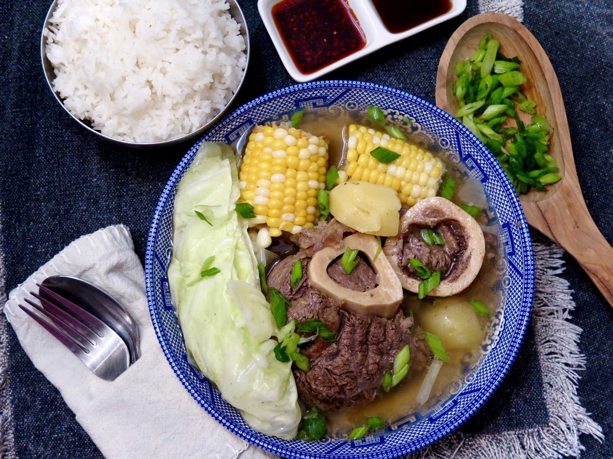

Beef Bulalo

Description
It’s a well known fact that Filipinos love stew and soup dishes. From the sour sinigang to the sweet tinola, there’s guaranteed to be a soup dish for every flavor palate preference –– all great to sip and enjoy, especially during long, cool nights. But one of the most popular, and arguably most delicious, soups…
Ingredients
- 2 lbs beef shank
- ½ cabbage whole leaf individually detached
- 1 bundle bok choy
- 2 cobs corn each cut into 3 parts
- 2 Tablespoons whole peppercorn
- 1/2 cup green onions cut unto 1 1/2 inch pieces
- 1 onion
- 34 ounces water
- fish sauce to taste optional
Steps
- In a big cooking pot, pour in water and bring to a boil
- Put-in the beef shank followed by the onion and whole pepper corn then simmer for 1.5 hours (30 mins if using a pressure cooker) or until meat is tender.
- Add the corn and simmer for another 10 minutes
- Add the fish sauce,cabbage, pechay, and green onion (onion leeks)
- Serve hot. Share and Enjoy!